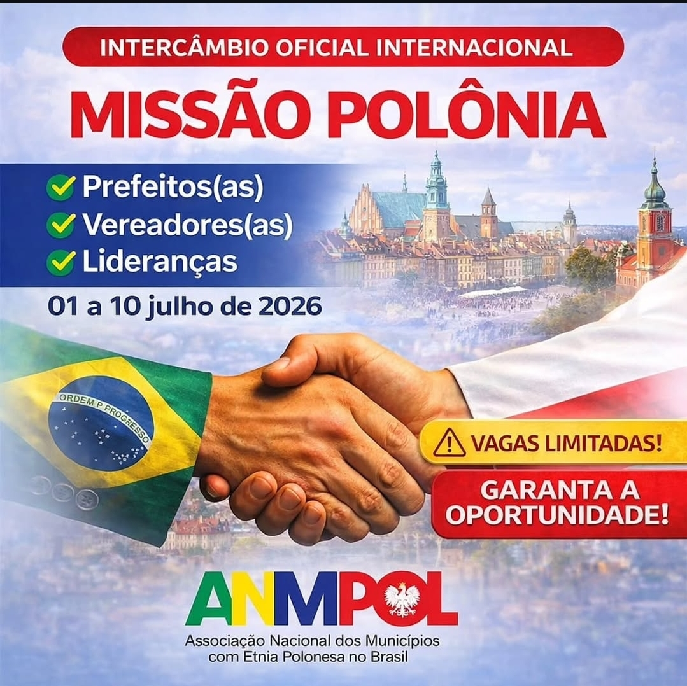

Missão
Associação Nacional dos Municípios com Etnia Polonesa no Brasil.

Atenção, gestor público: essa decisão pode mudar o futuro do seu município.
Não é uma viagem. É um acesso direto a oportunidades internacionais reais.
Entre 01 e 10 de julho de 2026, um grupo seleto de prefeitos, vereadores e lideranças estará na Polônia participando de uma agenda oficial com governos, instituições e organismos internacionais.
O que está em jogo
- Municípios participantes terão prioridade em cooperação internacional
- Acesso a acordos diretos com cidades europeias
- Intercâmbios educacionais e culturais oficiais
- Conexões com oportunidades econômicas e institucionais
- Inserção em uma rede internacional permanente
E o mais importante: os municípios que participarem desta primeira missão serão os fundadores dessa relação internacional.
Quem entra agora, lidera.
Quem fica de fora, corre atrás depois.
Vagas extremamente limitadas. A delegação será fechada após o preenchimento. Sem segunda chamada. Sem lista extra.
Prefeitos(as), Vereadores(as) e Lideranças:
Essa não é uma decisão comum — é uma decisão estratégica.